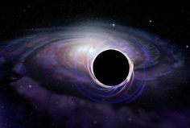
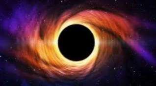
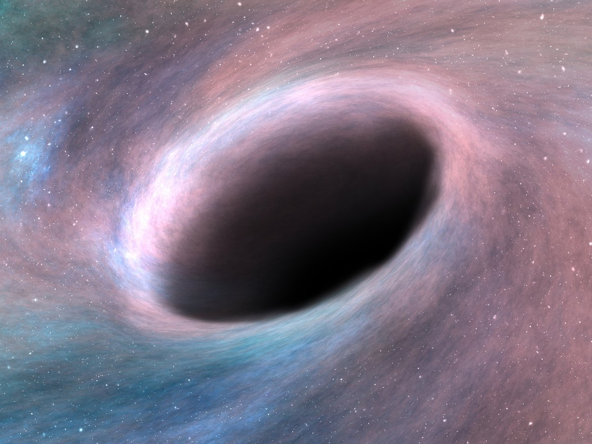
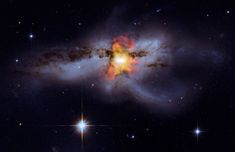

Se forman cuando una estrella de más de 30-70 masas solares se convierte en supernova e implosiona.
Luego lo que queda colapsa y se transforma en un objeto súper compacto—un agujero negro. Las estrellas deben contener bastante más materia que nuestro Sol para que esto pueda suceder.

✧✦imagen✧✦


